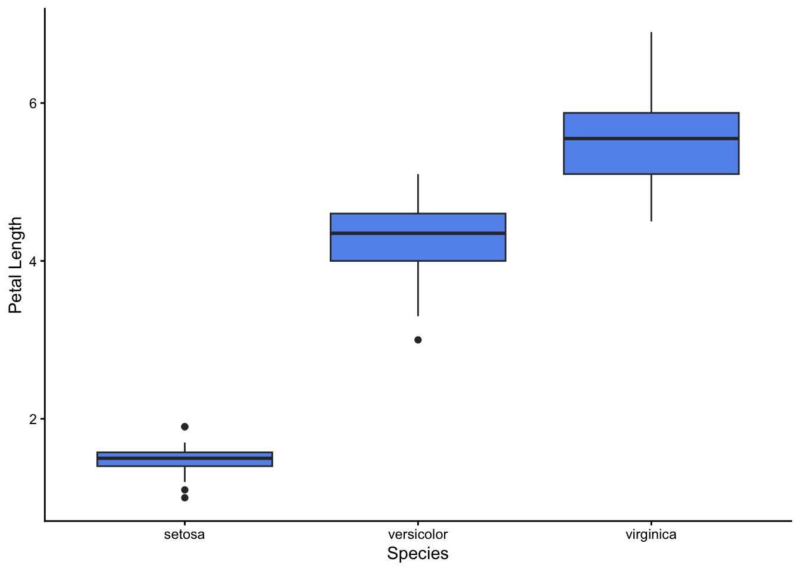
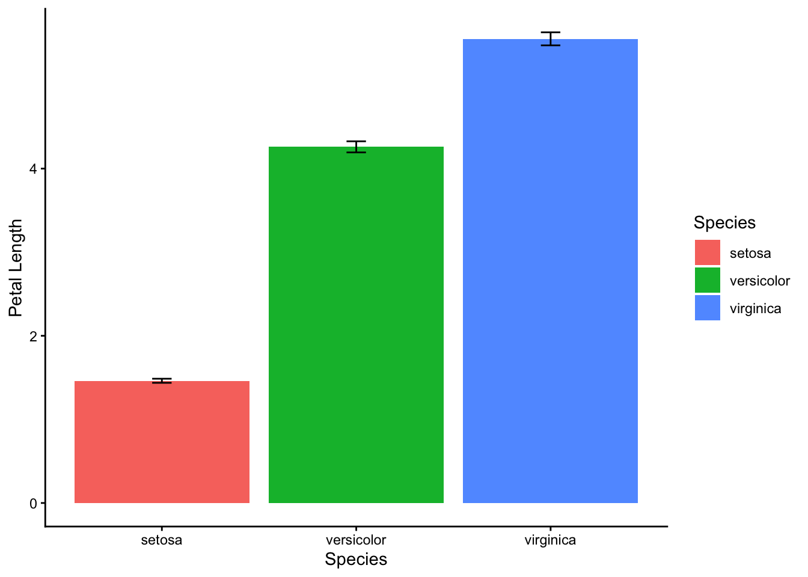
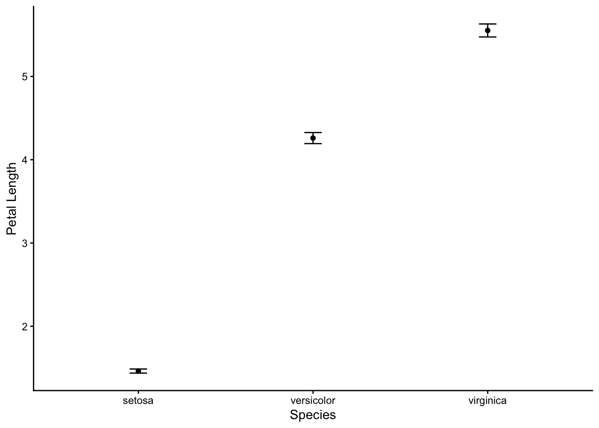
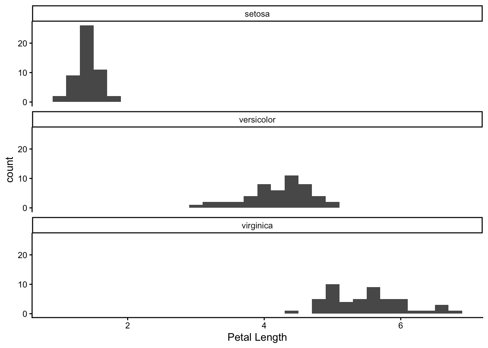
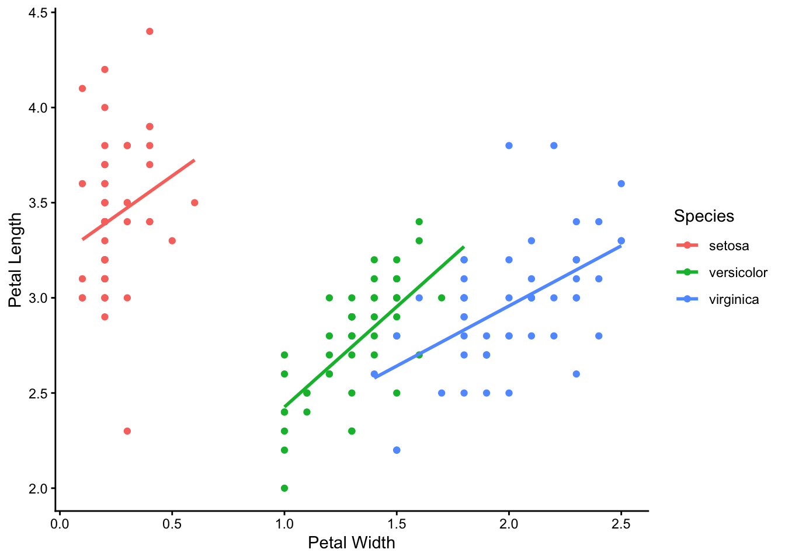
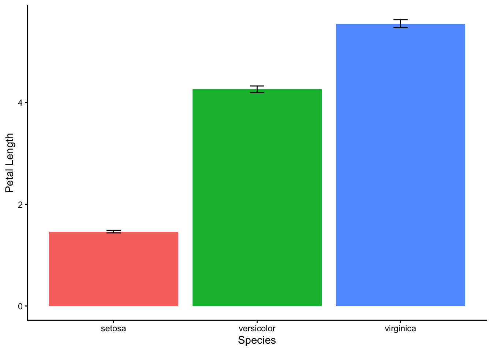
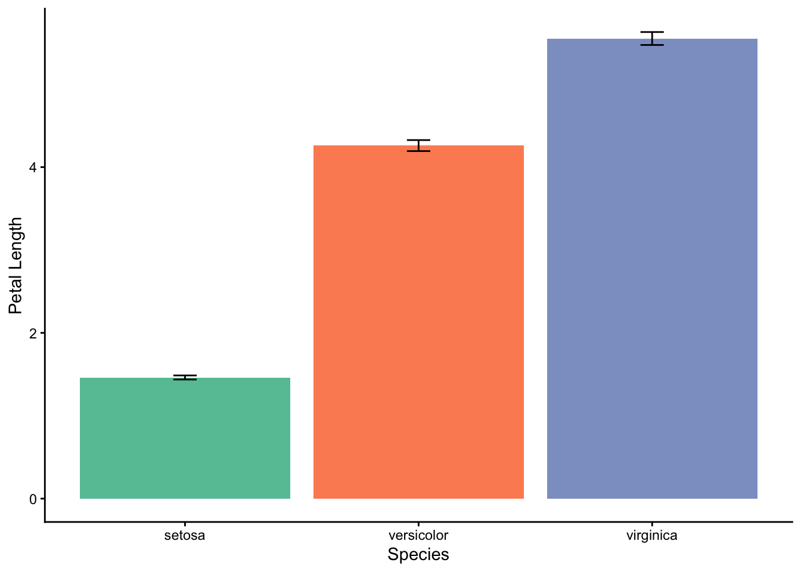
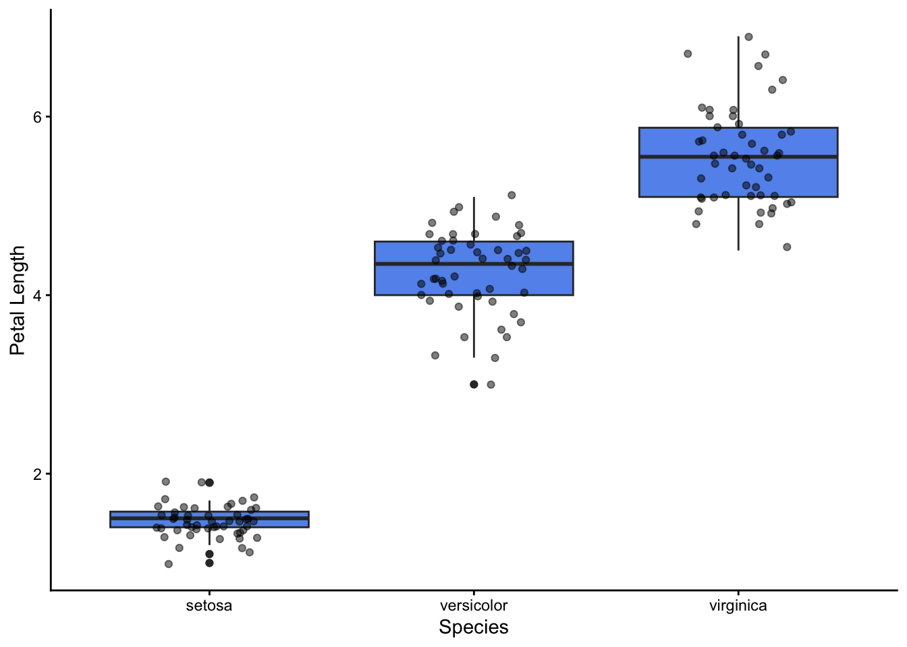

library(tidyverse)
library(here)
library(readxl)Summarising data
Introduction
In this notebook we are going to read data in from a spreadsheet, inspect it, then summarize it and plot it. These are steps you will typically want to take at the beginning of almost every data analysis notebook. They help inform your ideas as to whether you are likely to reject or fail to reject any null hypotheses you may have.
We are going to load measurements of the petal and sepal lengths and widths of three species of iris, with measurements made on 50 individuals for each species. Here, we will focus on the petal lengths.
Is there evidence from this data, we might ask, for whether the petal lengths differ between the species?
You will learn best if you use this notebook as a basis for writing your own. To do that, go through it from beginning to end. Read the text before each code chunk, then as you come to the chunks, copy them and their headers into your own notebooks then run them sequentially by pressing the green arrow in the top right corner of the chunk. If you meet any errors, you may want to run the lines in each chunk individually by placing your cursor in the line and pressing Ctrl-Enter (Windows) or Cmd-Enter (Mac).
You may find it easier to write your notebook in ‘Source’ mode (see the button, top-left of the notebook pane), but may occasionally like to view it in ‘Visual’ mode, to see the effect of any formatting you try.
In your own notebook, write down explanatory notes in between each code chunk to remind yourself of what it is trying to do or any other useful tips about how it is doing it, as a reminder to yourself when later you come back to read your notebook and want to understand it and perhaps to copy and adapt parts of it for use in another notebook.
Load Packages
We normally load all packages that we will make use of in one chunk at the top of our notebook.
We can add to this chunk later with lines for other packages if we later decide we need them.
For this notebook
Load data
The here package helps us to find our data on our computer.
In this chunk we read the ‘iris’ worksheet of the difference_data.xlsx spreadsheet into an ‘object’ in R which we have decided to call, ahem, iris (why not? Seems a sensible name and is short). ‘Object’ is the generic term for any ‘thing’ in R’s ‘brain’. All the objects you create while working on your Project will appear in the Environment pane, top-left. There can be different kinds of object. iris is what is called a data frame (or sometimes, these days, a tibble). Think of it as being like a worksheet in a spreadsheet, with columns of all kinds of data, usually with column headings.
First we use the here() function from the here package to work out the file path on our machine to the data file we want to use. Our file is the difference_data.xlsx file which we have placed in the data subfolder of our Project. We store this path in an object called filepath. This is a long and horrible string of text which you can see in the Environment pane once you have run the line that creates it. Then we use the read_excel() function from the readxl package to read the data in the iris worksheet of the spreadsheet into the data frame which we call iris. Finally we use the glimpse() function to inspect this data frame.
glimpse() tells us how many rows and columns we have, what the column headings are and what kind of data they contain.
<dbl>is R-speak for numerical data<chr>means ‘character’, which is R-speak for text.
filepath<-here("data","difference_data.xlsx")
iris_data<-read_excel(filepath,"iris")
glimpse(iris)Rows: 150
Columns: 5
$ Sepal.Length <dbl> 5.1, 4.9, 4.7, 4.6, 5.0, 5.4, 4.6, 5.0, 4.4, 4.9, 5.4, 4.…
$ Sepal.Width <dbl> 3.5, 3.0, 3.2, 3.1, 3.6, 3.9, 3.4, 3.4, 2.9, 3.1, 3.7, 3.…
$ Petal.Length <dbl> 1.4, 1.4, 1.3, 1.5, 1.4, 1.7, 1.4, 1.5, 1.4, 1.5, 1.5, 1.…
$ Petal.Width <dbl> 0.2, 0.2, 0.2, 0.2, 0.2, 0.4, 0.3, 0.2, 0.2, 0.1, 0.2, 0.…
$ Species <fct> setosa, setosa, setosa, setosa, setosa, setosa, setosa, s…There are other ways besides glimpse() by which we can inspect our iris object. Another is to click on the word iris where it appears in the Environment pane. What do you see if you do that?
Summarise the data
A step that is often useful to take next is to calculate some summary statistics of interest for each of the groups within the data set. In our case, that means for each species.
In this chunk we are going to use the ‘pipe’ operator |>. This is really useful and it certainly pays to get the hang of its use. Roughly speaking, it feeds the result of one line in to the next line. You can think of it as meaning, more or less, ‘and then’.
So in the chunk below we:
start with the
irisdataframe and then wegroup it by Species and then, for each Species, we
calculate summary statistics, in this case the mean and standard error of the mean. We choose to do this because these values will help us address our question as to whether the petals lengths are different for different species.
There is no formula in R to calculate the standard error of the mean of a sample (an estimate of how precisely the mean of the sample estimates the true mean of the population from which the sample is drawn), but there is one, sd(), to calculate the standard deviation of the sample (a measure of the spread of values within the sample) and another n() that tells us how many observations we have for each species. We can use these to calculate the standard error of the sample means for each species using the formula:
\[\text{Standard error of the mean}=\frac{\text{Standard deviation of the sample}}{\sqrt{\text{Sample size}}}\]
Finally, we write the result to an object called PL_summary (in the top line) which we print out by typing its name, alone, in the final line.
PL_summary<-iris_data |> # we are using the 'pipe' operator!
group_by(Species) |>
summarise( mean.PL=mean(Petal.Length), se.PL=sd(Petal.Length)/sqrt(n()) )
PL_summary# A tibble: 3 × 3
Species mean.PL se.PL
<chr> <dbl> <dbl>
1 setosa 1.46 0.0246
2 versicolor 4.26 0.0665
3 virginica 5.55 0.0780PL_summary is a data frame, just like iris. We will use it later for creating a bar chart and a scatter plot of the mean petal lengths of each of the iris species.
This and then pipe operator |> is really useful.
Plot the data
The next stage in our ‘workflow’ towards doing a statistical analysis that addresses our question (Does the petal length of iris plants differ between species?) is to plot the data. There are different plots we can do. Here we will show you how to do a box plot, a bar chart and a histogram, all of which can be useful for ‘difference’ questions, where the data fall into two or more categories.
For each of the plots we will use the ggplot2 package that we have loaded as part of tidyverse.
Box plots and violin plots
The code below produces a rough and ready but decent box plot, which is good way of comparing the distributions of measurements of the same thing (here, petal length) across different categories, (here, species of iris).
The code illustrates how we go about producing plots using ggplot2. One way to think of it is as it being like producing maps in GIS, with the final product being the sum of layers which are added one by one, with subsequent layers adding new information and overlaying earlier ones.
We have added annotations to explain what is going on, line by line.
1iris_data |>
2 ggplot(aes(x=Species,y=Petal.Length)) +
3 geom_boxplot(fill = "cornflowerblue") +
4 labs(x="Species", y="Petal Length") +
5 theme_classic()- 1
- Start with the iris data, and then
- 2
- Stipulate which column of our data set will be ‘mapped’ to the x-axis and which to the y-axis
- 3
- Stipulate what kind of plot we want : in this case, a box plot. Also, stipulate that all the fill colours will be cornflower blue, regardless of species.
- 4
- Add axis labels
- 5
-
Set the overall look of the plot using one of many
theme()options.

Thoughts
- Do you know how to interpret a box plot?
- Would it help to overlay each plot with a cloud of the actual data points?
- Do you want a different fill colour for each box? If so, maybe think again, but if you really do, look at the code for the bar chart and copy what it does.
- Try replacing
geom_boxplot()withgeom_violin(). This gives you a so-called violin plot. Which do you prefer, and why?
Bar charts with standard errors of the mean
Bar charts show the mean values of different sub-groups of a dataset. They are only really useful if a ‘standard error’ bar is included on each bar. Only then can a reader assess, however crudely, whether the difference between the means of different samples, shown by the height of the bars is ‘significant’. Remember that our samples, (50 of this iris species, 50 of that species, or 167 penguins from this island, 124 from that island etc, are, almost always, a tiny fraction of the populations from which they are drawn. There are vastly more than 50 specimens of setosa iris out there in the wild, and so our sample mean of some quantity is only an estimate of the true population mean. Another sample drawn from the same population would have a slightly different mean. The standard error bar gives us an idea of how far from the truth that estimate might be, and thus whether any two sample means as shown by bar heights in our chart likely evidence a real difference or not.
1PL_summary |>
2 ggplot(aes(x=Species,y=mean.PL,fill=Species)) +
3 geom_col() +
4 geom_errorbar(aes(ymin=mean.PL-se.PL,ymax=mean.PL+se.PL),width=0.1) +
5 labs(x="Species", y="Petal Length") +
6 theme_classic()- 1
-
Take the
PL_summarydata frame that we created earlier, and then - 2
- Map the Species column to the x axis, the mean.PL column to the y-axis the fill colours of the bars to the Species column.
- 3
- Plot the data as a bar chart
- 4
- Add an additional error bar layer, making the eror bars ± 1 standard error
- 5
- Add labels to the axes
- 6
-
Set the overall look of the plot using a
theme_option.

Thoughts
- Do we need the legend? If not, can we get rid of it?
- Can we tell the distribution of the data from box plots?
- Does it add any extra information to the plot if we use a different colour for each bar?
Plot only the means with error bars.
This does the same job as the box plot, but with less ink.
PL_summary |>
ggplot(aes(x=Species,y=mean.PL)) +
1 geom_point() +
geom_errorbar(aes(ymin=mean.PL-se.PL,ymax=mean.PL+se.PL),width=0.1) +
labs(x="Species", y="Petal Length") +
theme_classic() - 1
-
This
geom_point()is what we would use for a scatter plot

Histograms
Histograms are another way to to depict the distribution of a continuous variable. In these, the range of values taken by that variable is divided into consecutive ranges called ‘bins’ and then a count is made of how many data points fall within each bin.
1iris_data |>
2 ggplot(aes(x=Petal.Length)) +
3 geom_histogram(binwidth=0.2) +
4 labs(x="Petal Length") +
5 facet_wrap(~Species,ncol=1) +
6 theme_classic()- 1
-
Take the
irisdata frame and then - 2
- Map the Petal.Length column to the x axis
- 3
- Choose to plot the data as a histogram, with bins of width 0.2
- 4
- Add axis labels
- 5
- Do the same plot for each species and display them together in one column.
- 6
-
Choose an overall look for the plot, in this case using
theme_classic().

Thoughts
- Try altering the bin width of the bins. What happens to the histograms if this width is very wide or very narrow?
- the
facet_wrap()line is really useful for creating groups of identically styled plots across all the levels of some categorical variable. Here, we used it create a histogram for each of the three species of iris.
Scatter plot
Box plots and bar charts are appropriate when one of the variables is categorial. In our case that variable was Species, which had threee levels: setosa, versicolor and virginica. If both variables we want to plot are continuous, and we want to investigate a trend rather than look for a difference, then we often want to plot a scatter plot instead, and sometimes to fit a ‘best-fit’ line through the data. This is how we would do that if we were, say, investigating the association between petal width and sepal width, separately for the three iris species:
1iris_data |>
2 ggplot(aes(x=Petal.Width,y=Sepal.Width,colour=Species)) +
3 geom_point() +
4 geom_smooth(method = "lm", se = FALSE) +
5 labs(x="Petal Width", y="Petal Length") +
6 theme_classic()- 1
- Take the iris data set and then
- 2
- Set the aesthetics: Map the x-axis to the Petal.Width column and the y-axis to the Petal.Length column. Map colours to the Species column.
- 3
- Choose to plot the data as a scatter plot
- 4
-
Add a best fit line. Require this to be straight by choosing
method = "lm". - 5
- Add axis labels
- 6
-
Use a
themeto set the overall style of the plot.

Thoughts
- We need the legend here, right?
- Try removing the
colour = Speciesargument from theggplot(...)line. Do you see now why we included it?
Pimping the plots
Pimp One: Remove the legend
We sometimes get given a legend even though we don’t need one. To get rid of it, just add the line theme(legend.position = "none") to the bottom. Let’s do it for the bar chart plot:
PL_summary |>
ggplot(aes(x=Species,y=mean.PL,fill=Species)) +
geom_col() +
geom_errorbar(aes(ymin=mean.PL-se.PL,ymax=mean.PL+se.PL),width=0.1) +
labs(x="Species", y="Petal Length") +
theme_classic() +
theme(legend.position = "none") # remove the legend. This is a comment!
Pimp Two: Improve the colours
R will recognise a large number of colour names (see here, for example), and you may be happy with that, but you may wish to use other palettes of colour. One set of these that is widely used in charts is derived from work by the geographer Cynthia Brewer. See here and here for an overview. You can use these colours easily in plots made using the gglpot2 package by adding a scale_fill_brewer() or scale_colou_brewer()` line, depding on whether you want to fill box plots and such like, or colour points in scatter plots.
Here is how we would this in the bar chart:
PL_summary |>
ggplot(aes(x=Species,y=mean.PL,fill=Species)) +
geom_col() +
geom_errorbar(aes(ymin=mean.PL-se.PL,ymax=mean.PL+se.PL),width=0.1) +
1 scale_fill_brewer(palette = "Set2") +
labs(x="Species", y="Petal Length") +
theme_classic() +
theme(legend.position="none")- 1
- Use the Brewer palette called ‘Set 2’. This is an example of a qualititative palette, where the colours do not imply any ordering. See here for more information.

Pimp Three: Add the actual points on top of a box plot
If your data set is not too big, it can be useful to add a ‘jittered’ scatter of the actual points on top of the box plot layer. This gives the readers a better sense of the actual distribution of the data, and of the sizes of each sample
iris_data |>
ggplot(aes(x=Species,y=Petal.Length)) +
geom_boxplot(fill = "cornflowerblue") +
1 geom_jitter(width = 0.2, alpha = 0.5) +
labs(x="Species", y="Petal Length") +
theme_classic() - 1
- Add jittered points on top, Try altering the width argument. The alpha argument alters the opacity of the points, where 0 means fully transparent and 1 means fully opaque. This can be useful to use where points might lie on top of each other.
